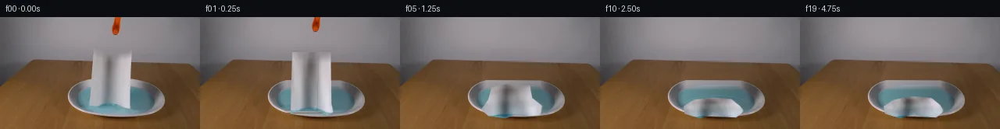

![首帧]()

Round 00
2026-11-05T05:39:58.264608+00:00像素候选变化代码 +280/−0inspection 更新
pixels ad9b2596b6c0f28b · code 0c007fbfad3cc8aa
查看本轮 generate.py 真实 diff
--- previous/generate.py +++ current/generate.py @@ -0,0 +1,280 @@ +from pathlib import Path + +import cv2 +import numpy as np +from PIL import Image, ImageDraw, ImageFont + +from artifact_io import save + + +ROOT = Path(__file__).resolve().parent +W, H = 256, 144 + + +def soft_mask(poly, blur=0.7): + """Antialiased polygon mask at source resolution.""" + scale = 4 + hi = np.zeros((H * scale, W * scale), np.uint8) + pts = np.round(np.asarray(poly, np.float32) * scale).astype(np.int32) + cv2.fillPoly(hi, [pts], 255, lineType=cv2.LINE_AA) + mask = cv2.resize(hi, (W, H), interpolation=cv2.INTER_AREA).astype(np.float32) / 255.0 + if blur: + mask = cv2.GaussianBlur(mask, (0, 0), blur) + return np.clip(mask, 0, 1) + + +def composite(dst, layer, alpha): + a = alpha[..., None].astype(np.float32) + return np.clip(dst.astype(np.float32) * (1 - a) + layer.astype(np.float32) * a, 0, 255).astype(np.uint8) + + +def build_clean_plate(src): + """Remove the held towel and cropped grabber using only neighboring pixels.""" + # Conservative object mattes. They deliberately stop at the natural lower edge. + towel_poly = np.array([ + [118, 39], [168, 41], [167, 108], [171, 118], [164, 122], + [151, 116], [140, 114], [128, 119], [115, 116], [118, 77] + ], np.int32) + towel_mask = np.zeros((H, W), np.uint8) + cv2.fillPoly(towel_mask, [towel_poly], 255) + towel_mask = cv2.dilate(towel_mask, np.ones((5, 5), np.uint8), iterations=1) + + hsv = cv2.cvtColor(src, cv2.COLOR_RGB2HSV) + grab = np.zeros((H, W), np.uint8) + orange = (hsv[..., 0] < 25) & (hsv[..., 1] > 90) & (np.indices((H, W))[1] > 138) & (np.indices((H, W))[1] < 160) & (np.indices((H, W))[0] < 30) + grab[orange] = 255 + grab = cv2.dilate(grab, np.ones((5, 5), np.uint8), iterations=1) + + clean = cv2.inpaint(cv2.cvtColor(src, cv2.COLOR_RGB2BGR), towel_mask | grab, 7, cv2.INPAINT_TELEA) + clean = cv2.cvtColor(clean, cv2.COLOR_BGR2RGB) + + # Inpainting a large central occluder can pull wall/table colors through the dish. + # Restore the hidden rows by interpolating the real pixels immediately to either side. + # Horizontal interpolation follows the dish's naturally smooth metal/liquid gradients. + for y in range(37, 124): + if y < 57: + xl, xr = 111, 176 + elif y < 78: + xl, xr = 111, 178 + else: + xl, xr = 110, 179 + left = src[y, xl].astype(np.float32) + right = src[y, xr].astype(np.float32) + # A very low-frequency vertical variation prevents an artificial flat stripe. + for x in range(xl + 1, xr): + q = (x - xl) / (xr - xl) + clean[y, x] = np.clip(left * (1 - q) + right * q, 0, 255) + + # Restore the inner liquid region with colors sampled from its visible left/right arcs. + yy, xx = np.mgrid[0:H, 0:W] + liquid = ((xx - 149.0) / 51.0) ** 2 + ((yy - 104.0) / 18.0) ** 2 <= 1.0 + hidden = liquid & (xx >= 111) & (xx <= 178) + for y in range(87, 123): + row = hidden[y] + if not row.any(): + continue + xs = np.flatnonzero(row) + # Visible liquid samples just beyond the old towel silhouette. + lcol = src[y, max(98, min(112, xs[0] - 2))].astype(np.float32) + rcol = src[y, min(200, max(176, xs[-1] + 2))].astype(np.float32) + for x in xs: + q = (x - xs[0]) / max(1, xs[-1] - xs[0]) + col = lcol * (1 - q) + rcol * q + # Preserve the cyan character visible on both sides. + col[0] = min(col[0], col[1] - 18) + col[2] = max(col[2], col[1] + 2) + clean[y, x] = np.clip(col, 0, 255) + … diff truncated; 193 more lines …